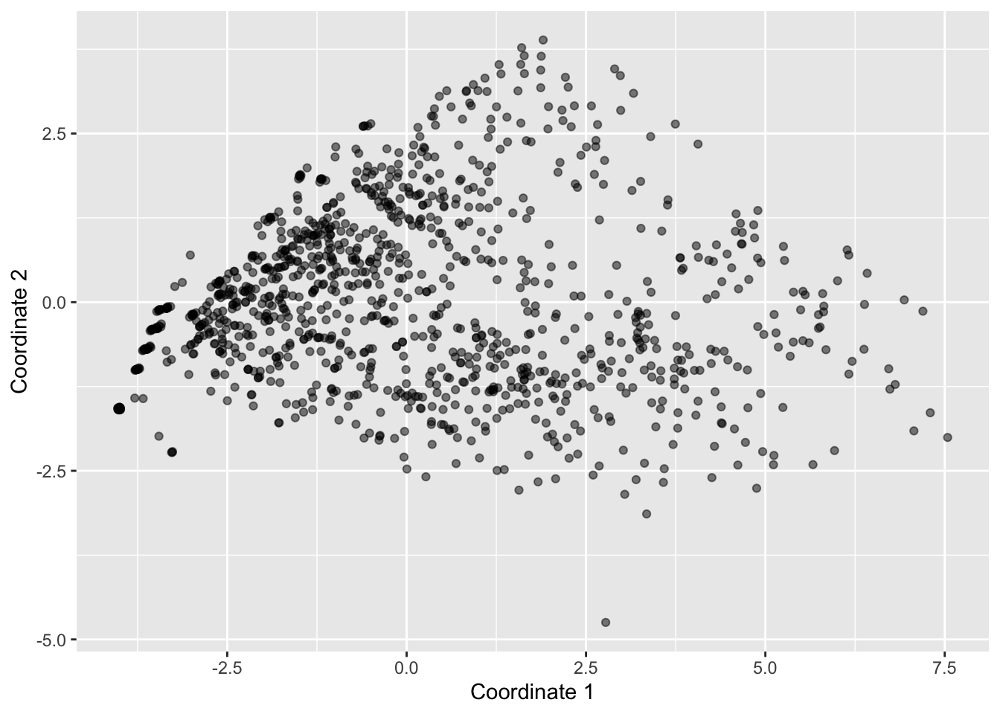
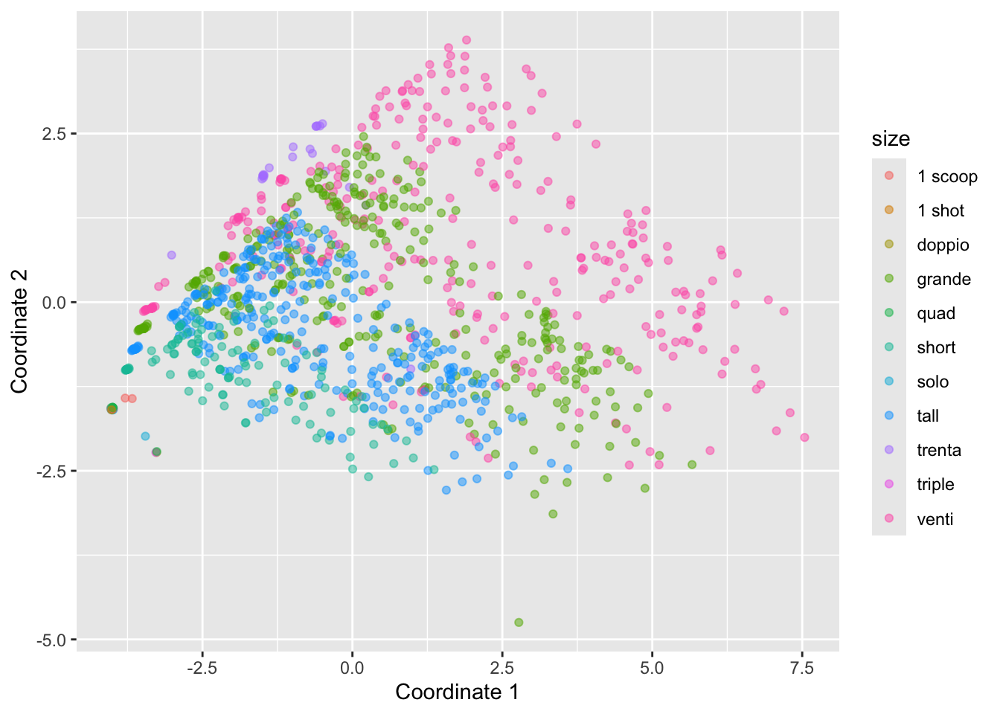
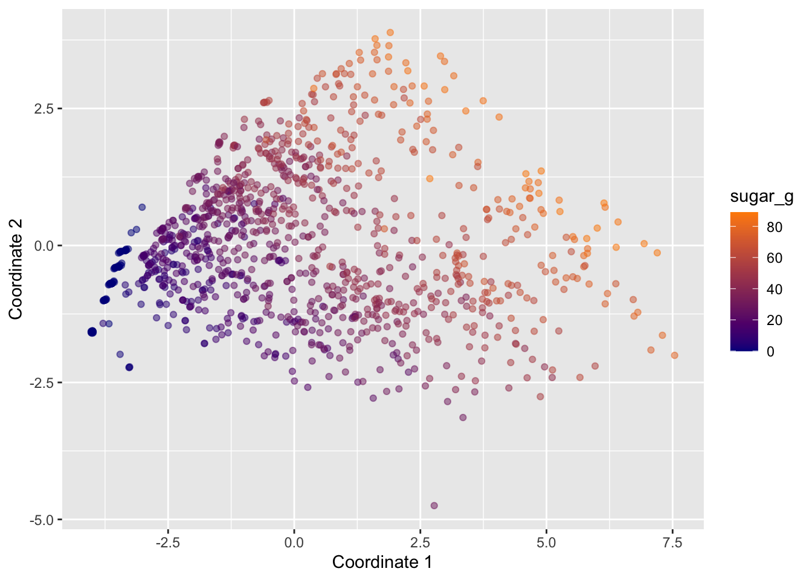

library(tidyverse)
starbucks <-
read_csv("https://raw.githubusercontent.com/rfordatascience/tidytuesday/master/data/2021/2021-12-21/starbucks.csv") |>
# Convert columns to numeric that were saved as character
mutate(trans_fat_g = as.numeric(trans_fat_g),
fiber_g = as.numeric(fiber_g))Demo 06: Visualizing Distances for High-Dimensional Data
The graphs below don’t have proper titles, axis labels, legends, etc. Please take care to do this on your own graphs.
Throughout this demo we use a dataset about Starbucks drinks available in the #TidyTuesday project.
You can read in and manipulate various columns in the dataset with the following code:
So far…
We’ve been working with “tidy data” – data that has \(n\) rows and \(p\) columns, where each row is an observation, and each column is a variable describing some feature of each observation.
Now we’ll discuss more complicated data structures.
Distance matrices
A distance matrix is a data structure that specifies the “distance” between each pair of observations in the original \(n\)-row, \(p\)-column dataset. For each pair of observations (e.g. \(x_i, x_j\)) in the original dataset, we compute the distance between those observations, denoted as \(d(x_i, x_j)\) or \(d_{ij}\) for short.
A variety of approaches for calculating the distance between a pair of observations can be used. The most commonly used approach (when we have quantitative variables) is called “Euclidean Distance”. The Euclidean distance between observations \(x_i\) and \(x_j\) is defined as follows: \(d(x_i, x_j) = \sqrt{\sum_{l = 1}^p (x_{i,l} - x_{j,l}) ^ 2}\). That is, it is the square root of the sum of squared differences between each column (\(l \in \{1, ..., p\}\)) of \(x_i\) and \(x_j\) (remember, there are \(p\) original columns / variables).
Note that if some variables in our dataset have substantially higher variance than others, the high-variance variables will dominate the calculation of distance, skewing our resulting distances towards the differences in these variables. As such, it’s common to scale the original dataset before calculating the distance, so that each variable is on the same scale.
Starbucks drinks dataset
In this R demo we will look at Starbucks drinks (courtesy of the #TidyTuesday project). In short, this is a dataset containing nutritional information about Starbucks drinks. We’re going to consider all of the quantitative variables in this dataset, starting with fifth column serv_size_m_l to the final column caffeine_mg. You can read about the columns in the dataset here. After selecting the desired columns, the first thing we’re going to do is use the scale() function to ensure each variable on the same scale, i.e., variances are equal to 1.
# Select the variables of interest:
starbucks_quant_data <- starbucks |>
dplyr::select(serv_size_m_l:caffeine_mg)
# Now scale each column so that the variance is 1 using the scale function:
# We specify here to not center the data and need to follow the directions in
# the help page of scale to ensure we are properly standardizing the variance
starbucks_scaled_quant_data <-
scale(starbucks_quant_data, center = FALSE,
scale = apply(starbucks_quant_data,
2, sd, na.rm = TRUE))
# Just for reference - this is equivalent to the following commented out code:
# starbucks_quant_data <- starbucks |>
# dplyr::select(serv_size_m_l:caffeine_mg)
# starbucks_scaled_quant_data <- apply(starbucks_quant_data, MARGIN = 2,
# FUN = function(x) x / sd(x))The most common way to compute distances in R is to use the dist function. This takes in a dataset and returns the distance matrix for that dataset. By default this computes the euclidean distance (method = "euclidean"), but other distance metrics can be used.
# Calculate distance matrix.
# As an example, we'll just look at the first five rows:
dist(starbucks_scaled_quant_data[1:5,]) 1 2 3 4
2 1.059790
3 2.160501 1.101588
4 3.388562 2.331643 1.232345
5 1.472299 2.380300 3.425819 4.643997# You can also include the diagonal if you want:
# (the diagonal will always be 0s)
dist(starbucks_scaled_quant_data[1:5,], diag = T) 1 2 3 4 5
1 0.000000
2 1.059790 0.000000
3 2.160501 1.101588 0.000000
4 3.388562 2.331643 1.232345 0.000000
5 1.472299 2.380300 3.425819 4.643997 0.000000# You can also include the "upper triangle" if you want:
dist(starbucks_scaled_quant_data[1:5,], upper = T) 1 2 3 4 5
1 1.059790 2.160501 3.388562 1.472299
2 1.059790 1.101588 2.331643 2.380300
3 2.160501 1.101588 1.232345 3.425819
4 3.388562 2.331643 1.232345 4.643997
5 1.472299 2.380300 3.425819 4.643997 # Can also include both:
# (this is the full distance matrix)
dist(starbucks_scaled_quant_data[1:5,], diag = T, upper = T) 1 2 3 4 5
1 0.000000 1.059790 2.160501 3.388562 1.472299
2 1.059790 0.000000 1.101588 2.331643 2.380300
3 2.160501 1.101588 0.000000 1.232345 3.425819
4 3.388562 2.331643 1.232345 0.000000 4.643997
5 1.472299 2.380300 3.425819 4.643997 0.000000# Can also consider other distance metrics
# The default is euclidean, as you can see below:
# (compare to what you see above)
dist(starbucks_scaled_quant_data[1:5,], method = "euclidean", diag = T, upper = T) 1 2 3 4 5
1 0.000000 1.059790 2.160501 3.388562 1.472299
2 1.059790 0.000000 1.101588 2.331643 2.380300
3 2.160501 1.101588 0.000000 1.232345 3.425819
4 3.388562 2.331643 1.232345 0.000000 4.643997
5 1.472299 2.380300 3.425819 4.643997 0.000000# For example, can consider the Manhattan distance:
dist(starbucks_scaled_quant_data[1:5,], method = "manhattan", diag = T, upper = T) 1 2 3 4 5
1 0.000000 1.552865 3.109038 4.818573 1.472299
2 1.552865 0.000000 1.556173 3.265708 3.025165
3 3.109038 1.556173 0.000000 1.709535 4.581337
4 4.818573 3.265708 1.709535 0.000000 6.290872
5 1.472299 3.025165 4.581337 6.290872 0.000000For the purposes of this class, we’ll mostly focus on the Euclidean distance, so let’s define that here:
dist_euc <- dist(starbucks_scaled_quant_data)Implementing multi-dimensional scaling
Now we will implement multi-dimensional scaling (MDS) in R. As a reminder, MDS tries to find the “best” \(k\)-dimensional projection of the original \(p\)-dimensional dataset (\(k < p\)).
As such, MDS tries to preserve the order of the pairwise distances. That is, pairs of observations with low distances in the original \(p\)-column dataset will still be have low distances in the smaller \(k\)-column dataset. Similarly, pairs of observations with high distances in the original \(p\)-column dataset will still be have high distances in the smaller \(k\)-column dataset.
MDS can be implemented in R using the cmdscale function. This function takes a distance matrix (not a dataset!!):
starbucks_mds <- cmdscale(d = dist_euc, k = 2)Note that you can change \(k\) to be greater than 2 if you want, but usually we want \(k = 2\) so that we can plot the (projected) distances in a scatterplot; see below.
For the purposes of plotting, let’s add the two coordinates of mds to our original dataset:
starbucks <- starbucks |>
mutate(mds1 = starbucks_mds[,1], mds2 = starbucks_mds[,2])Then, we can make a plot with ggplot:
starbucks |>
ggplot(aes(x = mds1, y = mds2)) +
geom_point(alpha = 0.5) +
labs(x = "Coordinate 1", y = "Coordinate 2")
It can be helpful to add colors and/or shapes of the plot according to categorical variables. For example, here’s the plot colored by size:
starbucks |>
ggplot(aes(x = mds1, y = mds2, color = size)) +
geom_point(alpha = 0.5) +
labs(x = "Coordinate 1", y = "Coordinate 2")
To get some insight into the contributions by the different continous variables, we could also map them to various aesthetics. For example, the following plots displays points colored by sugar_g:
starbucks |>
ggplot(aes(x = mds1, y = mds2, color = sugar_g)) +
geom_point(alpha = 0.5) +
scale_color_gradient(low = "darkblue", high = "darkorange") +
labs(x = "Coordinate 1", y = "Coordinate 2")
What do these two colored plots tell us about the data?